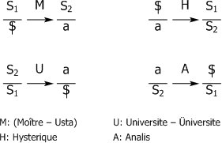

"Encore (Daha) Seminerinden Metinler
Jakobson'a,
Uluorta aptal bir şekilde dilden söz açmadan edemiyorum yine de. Jakobson sen buradasın bunu ancak sen başarırsın. Şu son günlerde Collège de France'da Jakobson'un yaptığı konuşmalarda bir kez daha ona hayran oldum ve şimdi hemen onu bu konuda övüyorum.
Aptallığı beslemek gerekir yine de. Tam da bu yüzden her beslenilen aptal mıdır? Pek de sayılmaz. Ama kanıtlanmış bir şey varsa o da şudur: Kendi kendine beslenmenin aptallığa ait olduğudur. Bu konuda, bu odada daha fazla bir şey mi söyleyeceğim, bir yerde, burada lokantadayız. Ve üniversite lokantasında olmadığımız için de kendimizi beslediğimizi hayal ediyoruz. Hayal boyutu bu işte, tam da bundan, hayalden besleniyoruz.
Psikanalitik söylemin size öğrettiğini hatırlatarak besleyen kişiyle olan ilişkilerde size güvendiğimi söyleyeyim. Bu besleyen sanki rastlantı gibi tam da annedir, arkasından da onun arzusu ve onunla birlikte öyle şeyler gelir ki ortalık cehenneme dönüşür. İşte beslenmede söz konusu olan budur. Bir yerde bir aptallıktır ama psikanalitik söylem bunu yerli yerine oturtur.
1
Günlerden bir gün bilinçdışının bulunmuş olduğu andan itibaren işin içine dilbilimi sokmak gerektiğini fark ettim.
Jakobson'un ağzından geçen gün duyduğunuz özelliğe yani dilde ne varsa hepsinin dilbilime dahil olduğuna yani son çözümlemede dilbilimciye ait olduğuna bir itiraz getireceğim ki bence bu konuda yapılacak tek itirazı da ben geliştirdim.
Kendisi bu akıl yürütmeyi şiirle ilgili geliştirdiği için, bu konuda onunla mutabıkım. Ama öznenin temellenmesiyle ilgili dilin tanımlanması sonucu ortaya çıkan Freud'un o kadar yenileyip altüst ettiği her şeyi düşünürsek onun ağzından bilinçdışı olarak onaylananın özelliklerini düşünürsek o zaman Jakobson'a kendi alanını bırakıp başka bir sözcük uyduralım. Ben buna "dilcicilik diyorum.
Bu da beni dilbilimcililerin şerrine itiyor ve birçok kere birçok dilbilimci tarafından haşlandım. Jakobson bunu yapmadı. O bana iyi davranır, başka türlü söylersek beni sever, biz bize kaldığımızda ben olayı böyle yorumlarım.
Benim ünlü deyişim –bilinçdışının bir dil gibi yapılanmış olduğu– dilbilim alanına ait değildir. Benim düzenli olarak çıkmayan L'Etourdit başlıklı dergide çıkacak metnimde yorumlanışını göreceğiniz bir şeye açılmış bir kapıdır, geçen seneler birçok kere tahtaya yazdığım ama asla geliştirmediğim bir cümleye açılan kapıdır: İşitilende, denilenin arkasında denilmesi istenen unutulmuş kalır.
Her deyiş, o deyişde dile gelenin, "denilenin[37] sonuçlarından yola çıkarak değerlendirilir. Ama "denilenden yola çıkarak ne yapılırsa yapılsın havada kalır. Çünkü yapılacak çok şey vardır. Mobilyalarla yapacağınız başka, bir bombardıman ve kuşatma başınızdan geçse, yapacağınız başkadır.[38]
Geçen yıl gündeme getirdiğim Rimbaud'nun bir metni vardır. Adı bir akla her suresini bitiren bir replikle bölünmüştür. Bu replik yeni bir aşktır, değil mi ki geçen sefer ben aşktan söz etmiş bulundum. Niçin şimdi bu düzeyde bu konuyu yeniden almayayım ve aklımda hep şu fikir var: Dilbilim ile dilbilimcilik arasındaki mesafe nasıl belirtilir?
Aşk bu metinde her seferinde üzerinde durulan akıl değiştirme işaretidir. Ve işte şair bu yüzden bu akla hitap etmektedir. Her seferinde akıl değiştirilir– yani söylem değiştirilir.
Burada size benim birbirinden ayıracağım dört söylemi hatırlatacağım. Benim dört yere yerleştirerek eklediğim ve her birinin bir "tetikleyici etkisiyle gündeme geldiği, temelinde psikanalitik söylem bulunan sadece dört söylem vardır. Ve psikanalitik söylemi ben bunların sonuncusu olarak görüyorum. Bunlar asla tarih içinde birbiri ardı sıra beliren durumlar olarak ele alınmamalıdır– bir tanesinin öbürlerinden çok daha önce ortaya çıkmış olması burada önemli değildir. İyi ya ben şu anda bu psikanalitik söylem üzerine şunu söyleyeyim: Bir söylemden öbürüne geçerken her zaman bir psikanalitik söyleme özgü çıkış vardır.
Psikanalitik söylem diye bir şeyin varlığından yola çıkarak ve sadece buna dayanarak yapılanmış olan bu kategorileri uygularken şu hakikatin sınanmakta olduğuna kulak kabartmak gerekir. Bir söylemden diğerine geçişte her seferinde bir psikanalitik söylem ortaya çıkar. Ben, aşkın söylem, bu tür değiştirmenin işaretidir diyorum sadece.
Son seferinde "büyük başkasının keyfinin aşk işareti olmadığını söyledim. Oysa şimdi de aşkın bir işaret olduğunu söylüyorum. Acaba aşk belirenin bir işaretten daha başka hiçbir şey olmaması durumuna mı bağlıdır?

Açıklama
Birinci söylem ustanın söylemidir. Ondan öbürleri saat yelkovanın doğrultusunda dönerek çıkarlar.
Söylemde 4 yer ve 4 öğe olduğuna göre bunları anlamak önemlidir.
S tetikleyicidir. Ama S1 genel olarak tetikleyiciler, birinci olarak zinciri başlatır ve onlar birbirlerinin ardından gelirler.
S2 bilgidir ama bu bilgi bilinçdışının bilgisi olmasına karşın bir tetikleyici olarak algılanır yine de. Çünkü bir tetikleyici bir özneyi bir başka tetikleyici için canlandırır.
SI Bölünmüş öznedir. Her türlü ideoloji onun bölünmüşlüğünü ya inkâr ediyor ya günün birinde kapatılacağını düşünüyorsa da psikanaliz için bu bölünmüşlük ortadan kalkacak cinsten değil, yapısaldır.
"Küçük a arzunun nedeni olan kaybolmuş öznenin sürekli peşinden gittiği keyif sağlayan bu nesne keyif Lacan'ın "daha da keyif adını verdiği bir sonsuzluk sürecindedir. Daha da, Fransızcada aynı zamanda artık anlamına geldiği için artı keyif de diyebiliriz. Bu durumda da Marx'ın artı değerine benzetilebilir.
Şimdi bu şemaları tarih dışı okumamak için Lacan'ın bunları ilk önce "Psikanalizin Tersi seminerinde geliştirdiğini ve ustanın söylevini politikacılarınkine benzeterek psikanalizin tersini onun söyleminin oluşturduğunu anımsatalım. Elbette ikili bir okumayla usantı söylemi iki türlü de okunabilir ama o zaman belki de dil ustalarıyla politik ustaları birbirlerinden ayırmak gerekecektir.
Ustanın konuşurken bastırdığı, içe attığı gündeme getirmediği özellik kesir çizgisinin altındaki bölünmüşlüktür. Bölünmüşlüğüne aldırmadan tetiklemelere dalan usta aslında üretildiği yeri karşısındaki hakikatin geldiği artı keyfi de göremez. Ve hitap ettiği, başkası olarak aldığı da bilgi olabilir ancak.
Oysa psikanalistin yerleştiği nokta keyfin çoğaldığı, sonsuzlaştığı noktadır. Karşındaki öznenin bölünmüşlüğü ise onun tetikleyicilerden oluştuğunun kanıtıdır.
Şimdi bir an için ustanın söylemine geri dönerek sadece terimleri değil yerleri de açıklayalım:
Konuşan, üsteleyen, eyleyen Başkası
——————————————————
Hakikat Üretim
...
Her söylemi gerçekleştiren biri vardır ve bunu gerçekleştirdiği anda birine hitap ettiği için o söylemin bir başkası vardır. Ustanın söyleminde başkalık bilgiden ileri gelmekte ve bu başkalığın keyif fazlalığı talebinden geldiği ustaya kapalı kalmaktadır? Ama hangi ustaya diye sorabiliriz ve söz konusu olan bir dil ustasıysa okuyuşumuzu değiştirebiliriz. Usta bölünmüşlüğünü tetikleyicilerde sergiler. Yunus Emre "bir ben vardır bende benden içeri derken, Lacan özneyi bölünmüş olarak anlatırken (psikanaliz uygularken değil bir seminer verirken), bu bölünmüşlüğün hakikatini de söyler. Her ne kadar şekilde görüldüğü gibi kesir altında da olsa öznenin aslını, bölünmüşlüğünü gösterir. O zaman Lacan ve Yunus Emre'nin karşısındakiler, onların söyleminden başka yerden edinebilecekleri bilgiden daha fazlasını kendilerine yönelik bir hitapla alırlar. Hiç kuşkusuz, alınan bu bilgi, keyfi gibi durur. Çünkü bölünmüşlük, tetikleyicinin altında yer alır.
Oysa histerik söylemin ön planına bölünmüşlüğünü koyduğu için, Türkçedeki deyimi kullanacak olursak bu bölünmüşlük içerisinde paralandığı için, hakikatinin keyif alma olduğunu, yani kendisinin belirtilerinin aslında kendisine keyif verdiğini anlayamayacak ve karşısındaki başkalık özelliği ancak tetikleyiciden oluşacağı için de üretimi bilgiden gelecek ama bu bilgi ile keyif arasında bir geçiş eksikliği (Impuissance şeklinde tabloda görülmektedir iktidarsızlık anlamına da gelir). Üniversite bilgiyi söylemin başına oturturken onun çıktığı noktayı yani tetikleyicileri bastıracak ve keyif vermeye çalıştığı öğrencilerin daha da bölünmesini sağlayacaktır.
Okuyucu, soyut görünen bu şemaları üzerlerinde çalışarak, bir kere anladıktan sonra da somut örnekler vererek daha iyi sindirebilir. Sözgelişi Cumhuriyet döneminde kadınlar, Türkçenin gelişmesi, Kürt açılımı vs. gibi herhangi bir konu üniversite tarafından nasıl işlenir, bir analist onu nasıl anlar vs. gibi (en azından üç örnekten sonra daha anlaşılır oluyor sanırım).
Lacan'ın Metni
(Bir paragraf sonrasından devam)
Aşk işareti olmayan şey "büyük başkasının yani diğer cinsin keyfidir. Ve ben yorumumu bu şekilde sürdürüyordum: Onu sembolize eden vücudun keyfidir.
Söylemin değişmesi–kıpır kıpır kıpırdar. Bu var ya bu sizi bu var ya bu bizi bu var ya bu kendi kendini aşar geçer. Hiç kimse nabzını yakalayamaz. Ben size istediğim kadar bu söylem kavramının dil temelli bir toplumsal bağ olarak alınması gerektiğini söyleyeyim, istediğim kadar dilbilimde gramer olarak belirlenen şeyle alakası olmadığını göstereyim yine de hiçbir şey değişmez (en azından değişmiyor gibi görünür).
Belki de bu hiç kimsenin ortaya koymadığı bir sorunun sorulmasını sağlar. Başarısı bu kadar patlamış bir kavram olan ve nerdeyse bütün bir bilimin onsuz edemediği "enformasyon kavramı aslında nedir? Genlerin moleküllerdeki enformasyon düzeyinden tutun da DNA saplarının çevresindeki çekirdek protein sarmalanmalarına kadar, üstelik bunların da diğerlerinin üzerine sarmalandığını bütünün de hormon bağlarıyla birbirine bağlı olduğunu öğreniyorsunuz–birbirine yollanan mesajlar, kaydedilen mesajlar ve sairelerle uğraşıyoruz. Bu formülün başarısı sadece kendi içine kapalı kalan bir dilbilim değil, bal gibi de kendini dile getiren bir dilbilime inkâr edilemeyecek bir kaynak olarak bağlıdır. Son olarak, bu eylem bilimsel düşüncenin temeline kadar yayılarak "negantropie olarak anılarak eklenmektedir.
Peki, ben tetikleyicinin işlevinden yararlanırken "dilbilimciliğimi başka bir yerden mi toparlıyorum.
II.
Bir tetikleyici nedir?
Hiç de sadece özellikle Saussurecü olmayan, kökeni Stoacılara kadar çıkan oradan da SaintAugustin'de yankılar bulan bir dilbilim geleneğinin ayinlerinin öne sürdüğü tetikleyici topolojik terimler içerisinde yapılandırılmalıdır. Aslında tetikleyici her şeyden önce işaret edilen anlamın etkisini ortaya çıkartır. Ve şurasının hiçbir zaman yok saymamalıyız ki tetikleyici ile anlam arasında aşılması gereken bir çekilmiş bir set vardır.
Dille ilgili olanı bu şekilde bir topoloji içerisinde ele almak tetikleyiciyi fonemde somutlaştıran hayranlık verici bir bilim olan fonolojide eleştirilir. Ama tetikleyici asla bu fonem düzeyinde kendini sınırlamakla yetinemez. O zaman yeniden soruyoruz bir tetikleyici nedir her şeyden önce soruyu bu şekilde sormaktan vazgeçmeliyiz.
POLİSİYE BİR BİTİŞ:
Polis romanlarını Edgar Allan Poe başlatmıştır. 1848'de öldüğünde onunkilerden başka polisiye roman yazılmamıştı. Üçü birbirine bağlı bu türden metinlerinde Dupin adlı bir dedektif yaratmıştır. Üçünde de cinayetleri ya da içinden çıkılmayacak derecede çetrefil durumları o çözer: "Morg Sokağı Cinayeti, "Marie Roget'nin Esrarı, "Çalınmış Mektup. Aslında birincisinin tam çevirisi "Morg Sokağı Çifte Cinayeti, sonuncusunun da "Uzatılmış Mektuptur.
Fransızca ve İngilizcede letter hem mektup, hem harf hem de yerine göre edebiyat anlamına geldiğinden Lacan için biçilmiş kaftan olan "The Purloined Letter üzerine seminerini Yazılar'ı ilk yayımlandığında Lacan açılış metni yapmıştır. Ama sonradan, tıpkı Freud'un "Düşlerin Yorumunda yer alan kendisinin hastalarından biriyle ilgili olarak gördüğü "İrma'nın Düşü gibi, başka yorumcular tarafından da o kadar çok yeniden ele alınmış, yeniden yorumlanmıştır ki bu seminer, onu başta değil de sonda gündeme getirmeyi uygun bulup biz de bu incelemeyi, onunla kapatmayı düşündük bir yerde.
Konusu şöyledir: Paris'te kral ve kraliçenin beraberce bulundukları bir sırada Kraliçeye bir mektup gelir. Hikâyeyi bize anlatan kişi onun içeriğini öğrenememiştir ama anlaşılan kraliçenin itibarını zedeleyecek bir mektuptur bu. İçinde bulundukları odada o an fazladan orada yer alan ve kraliçeye öteden beri gıcık olan bir bakan, mektubu karliçenin ters çevirdiğni görünce önemini anlar ve onu çalar. Paris Polis müfettişine başvuran kraliçe bir an evvel mektubun bulunmasını istemektedir. Polis bakanın evini arar, incelenmedik yer bırakmaz, mektubun bulunduğu odayı didik didik eder, taş taş üstünde bırakmaz ama mektubu bulamaz. Bu aşamada polis müfettişi Dupin'e müracaat eder.
Bakanın evine bir ziyarette bulunan Dupin aslında mektubun pek de o kadar gizli bir yere saklanmadığını anlar. Mektup şöminenin orada eski mektupların arasına sıkıştırılmıştır. Biraz buruşturulduğu için ve ille de gizli bir yerde saklı olduğunu düşünerek oradaki mektupları taramadıkları için polisler onu bulamamıştır. Bu alan psikanaliz açısından biliçdışının açıklanması için önemlidir: Lacan'a göre tetikleyicilerin yeri olarak belirlenen bilinçdışı tam da böyle ele alınmalıdır aynı zamanda. Lacan için gizli falan değil ortada sadece biraz eksikli duran bir yapıdadır o da.
Hikâyelerin üçünü beraber okursak Dupin'in önemli bir aileden geldiğini ve üvey kardeşinin ona attığı kazıklar yüzünden kötü duruma düştüğünü anlar ve diğir ipuçlarından yola çıkarak bakanın da onun aslında söz konusu üvey kardeşi olduğunu çıkartabiliriz. Ondan okkalı bir intikam almak isteyen Dupin, mektubun yerini anlayınca, pencerede kendisinin tezgâhladığı bir yangın çağırısına bakarken, bakanı gafil avlar ve mektubu yeniden ele geçirir, yani çalar. Yalnız yerine yeni bir mektup koymuş ve üstüne Fransız yazarı Crébillon'un Eski Yunan trajedilerinden birini, kardeş kavgasını işleyen Atreus'u örnek alarak yazdığı bir oyundan bir parçayı alıp oraya geçirmiştir. O da şudur:
Böyle ölümcül bir kader
Atreusa değilse de Thyeste'ye uygun düşer
Oyuna konu olan efsaneye göre Atreus, kardeşi Thyeste‘in kendi karısıyla birlikte olup onu aldattığını öğrenince, kardeşinin şerefine bir şölen tertiplemiş ve ona kendi çocuklarının etini yedirmiştir. Bir tür ava giden avlanır kıssadan hissesiyle, Dupin bu oyundan alıntı yaparak, hem bakandan öcünü almış, hem de kardeş olarak kendisine atılan kazığın intikamını almıştır.
Bu metin üzerine çalışmasını İtalya'da San Casciano'da Makyavelli'nin doğduğu kasabada tamamlayan Lacan, harfin yani her türlü tetikleyicinin özneyi belirlediğini, tetikleyicinin kendi mantığını ele almak gerektiğini, bu mantıkla öznenin kendisinin elinde olmayan düzenlemelere girdiği gerçeğini altını çizerek vermiş olur ve bu kurgunun herhangi bir bilimsel hakikati örtüsüz verme çabasından daha değerli olduğunu ortaya çıkartır. Ama Crébillon'dan yaptığı alıntıda küçük bir yanlışlık vardır. Metinde böyle ölümcül bir kader değil böyle ölümcül bir niyet denmektedir. Fransızcada kader, "destin; niyet, "desseindir. Lacan, alıntı yaparken bu iki sözcüğü birbirlerinin yerine koymuştur. Hiç kuşkusuz burada bilindişını tahrik eden bir gerçeğe gönderme vardır. Bulunduğu yerle ilgili bir açıklama düşünebilir, şöyle bir varsayım geliştirebiliriz: Machiavelli özneyi Fortuna'nın kaderin belirlediğini söylemişti, bu aktarma ondan mı ödünç alınmıştır acaba?
Ne olursa olsun, bu karıştırmayı Lacan'ın metnindeki diğer göndermelerle birlikte ele alan başkaları da olacaktır. Bu derinlemesine yeniden okumaların sonucunda Dupinler çoğalacak, Derrida, Major vs. metni tekrar okuyacaklardır. Metinlerde kendi çiftlerimiz, ikizlerimiz bizi kâh ölümlere kâh cinayetlere çağırmaktadır. Ölüm itkisi doğrulutusunda onların tetikleyicisi olarak kendimiz de tetikçi oluruz. Dili deneyime sokan keyif hep biraz acıyla birlikte işler. Gerçekle onun peşinde koşan psikanaliz arasında böyle bir bakışlı kedi kara hep yer alacak, nereden geldiğini bilmediğimiz bir anda, Poe'nun bu en sevdiği hayvan, "Geç saatlerin denizinden Ece Ayhan'ın şiirine atlayacak, "çuvalında yeni ölmüş çocukları seyredecektir. Freud en çok Eski Mısır uygarlığına tutkundu. Almanya'dan Fransa'ya onu götüren trene binip Almanya'dan kaçmayı, ancak Marie Bonaparte'ın bu koleksiyonu da trene alabilmesi koşuluyla kabul etmişti. Birkaç anında en uzaklardan gelen anıyı yakınlaştırıp bir tetikleme sürecine girmek hem polis romanlarının, hem tarihin, hem bilinçdışının ortak yönüdür.
İstanbul Arkeoloji Müzesi'nde benim çok sevdiğim mumya bir kedi var, ona bakarken Ece Ayhan'dan "Bakışsız Bir Kedi Karayı mırıldanırsanız Lacan'ın bakışına aşina olursunuz.